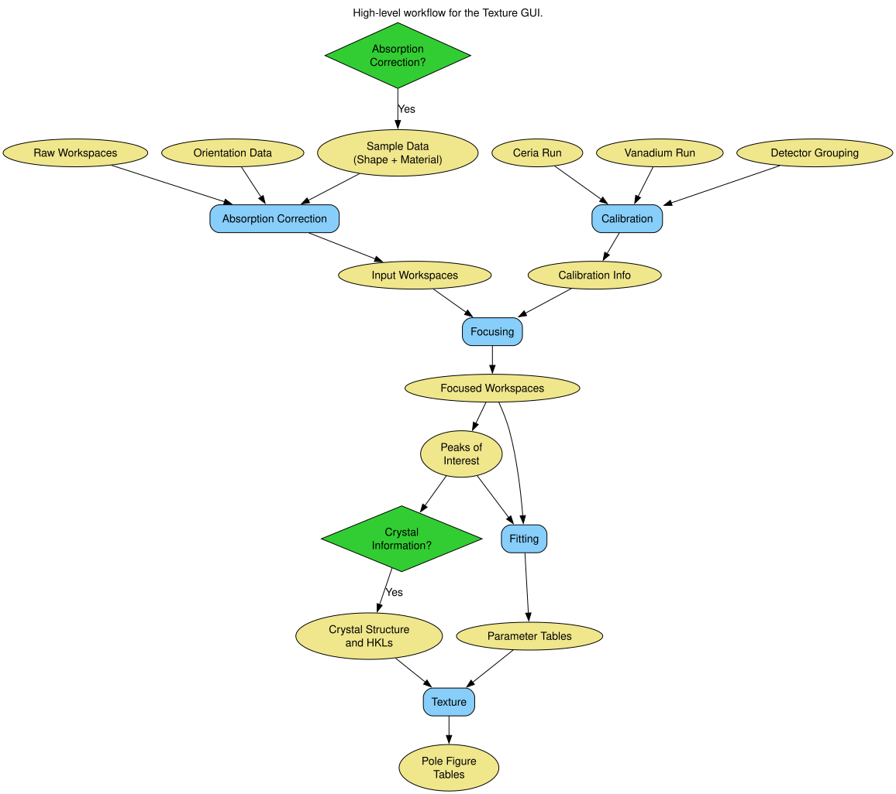
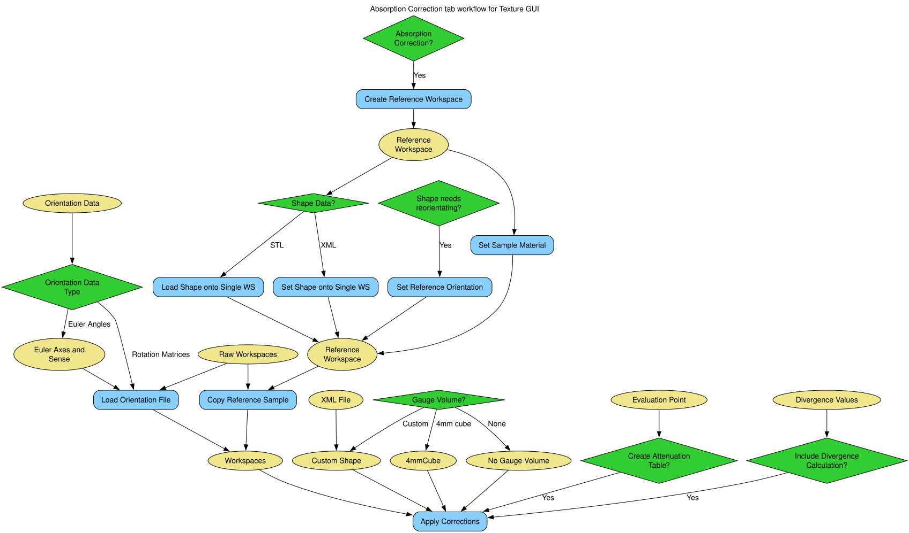

Texture Reduction#
Overview#
This document serves as somewhat of a tutorial for running a texture reduction in mantid, primarily focusing on performing the reduction within the Engineering Diffraction Interface. Within this tutorial we will work through a reduction with some real data and highlight the different options and considerations when it comes to performing the same reduction on your own data.
Introduction#
The basic workflow for performing a texture data reduction within the GUI is shown in the figure below:

From this diagram it can be seen that the main steps in the procedure are consolidated into the tabs of the interface, specifically: Correction; Calibration; Focusing; Fitting; and Texture. This diagram also gives a view of what data is required of the user (although in this diagram it is by no means comprehensive), but we can infer that, at the most basic level, we will require: some experimental data; some information on the orientation of the sample in each run; some calibration runs; and some diffraction peaks of interest.
We will now step through the procedure of performing a reduction, loosely following the structure of this pipeline. We will touch on some of the choices available when running through a similar workflow on your own data, but will not explain in detail what each option entails, for this please refer to the interface documentation
Step 0: Initial Set Up#
To follow along with example data you will require the Training Course Data with the revelant files to be found within the texture folder.
If you would like to follow along with all the below steps using your own experimental data you will require the following data/experimental information:
Raw Diffraction Data for each experimental run (this would ideally be nexus files or, if data search directories and priviledges are setup correctly, just the run numbers may suffice)
Calibration Run Data files, for ENGINX this is a Ceria run for diffraction parameter calibration and a vanadium run for intensity normalisation (see interface documentation for more information)
Sample Shape information, either as an
STLfile that you have created/obtained already or as a Constructive Solid Geometry shape definitionXMLstring (see How To Define Geometric Shape for more info)Sample Material Information, this is solely for attenuation correction and so the accuracy of the information will be determined by the accuracy required by your experiment (see Materials for more info)
Correct definition of the Sample Shape in its initial state when the goniometer is homed/default (this would ideally be how the sample shape information is provided above, but the shape definition could be defined in a different orientation and transformed to the initial state if necessary)
Orientation Information for each experimental run, either provided as transformation matrices or euler angles (if using euler angles you must know the axes of rotation for the goniometer and the sense of these rotations - take care to get this correct)
Sample Directions relative to sample shape (texture can be defined relative to intrinsic directions of the sample, for example the Rolling, Normal and Tranverse Directions)
The Shape of the experimental Gauge Volume
The Beam Diveregence Parameters
Crystal Structure either as lattice definition (see Crystal structure and reflections) or a
CIFfileDiffraction peaks of interest and their corresponding HKLs
Note: Not all of this information will be required to to perform a texture reduction in some capacity but absences will impose capability limits to greater or lesser extents.
Once you have gathered the required data/info:
Open the Engineering Diffraction Interface (From the home screen this can be found under
Interfaces/Diffractionon the main taskbar)Set an RB Number at the top of the interface (This acts as the root directory, to keep the work done for different experiments separate), for now, let’s use
TextureTutorial
Step 1: Preparing Input Workspaces and Applying Absorption Corrections#
The options and procedures for applying orientation data and subsequent absorption corrections within the GUI are shown in the figure below:

Loading Files for Correction#
Click on the
Absorption CorrectiontabClick
Browsenext to theSample Run(s)box and select the raw experimental data (ENGINX003649AB where AB : 01, 11, 20, 26, 29, 35, 44)Click
Load Files
This should populate the table below with the seven experimental datasets. Shape, material and orientation should all be unset to begin with.
Click the
Select Allbutton below the table to make sure all your datasets have been flagged as selectedCreate a reference workspace by clicking
Create Reference Workspace(these steps can be replaced with Loading an existing Reference workspace)
Adding Sample Shape to Reference Workspace#
To add a sample shape to the reference workspace you can have two options depending upon whether the shape is defined as an STL file or an XML file (see Step 0: Initial Set Up if using your own data):
STL:
Click
Load Shape onto single WSSet
InputWorkspaceasTextureTutorial_reference_workspaceClick
Browsenext toFilenameand navigate to the STL file provided in the Shapes folderSet
OutputWorkspaceasTextureTutorial_reference_workspaceFor this tutorial example, the rest can be left as default, but these options offer means of transforming the geometry in the STL file to the correct scale and orientation
Click
Run
XML:
Click
Set Shape onto single WSSet
InputWorkspaceasTextureTutorial_reference_workspaceCopy the contents of
example_sample_shape.xml(or copy below) into theShapeXMLboxAgain for this example nothing else is required, but for more complex use cases
Set Reference Orientationcan be used before clickingSet Shape onto single WSto rotate the shape defined in XML (currently translations must be made in the shape definition)Click
Run
XML data:
..testcode:
<cuboid id='some-cuboid'> \
<height val='0.015' /> \
<width val='0.012' /> \
<depth val='0.012' /> \
<centre x='0.0' y='0.0' z='0.0' /> \
</cuboid> \
<algebra val='some-cuboid' /> \
Adding Material to Reference Workspace#
To add the material of the sample (see Step 0: Initial Set Up if using your own data):
Click
Set Sample MaterialSet
InputWorkspaceasTextureTutorial_reference_workspaceSet
ChemicalFormulaasFeFor this tutorial example, the rest can be left as default
Click
Run
Setting Sample Axes#
At this point is is also worth considering the sample directions that you would like use for plotting the final pole figure (see Step 0: Initial Set Up if using your own data). Clicking the View button in the
Reference Workspace Information section, you can see the three sample axes that will be used, where the pole figure will be projected into the plane of the red and blue vectors.
To change the directions or labels of these axes:
Click the
Settingsmenu (gear icon, in the bottom left of the interface)Under
General > Texture Directionsyou will see there is a matrix which defines these sample directions as they are on the reference workspace.
The first column contains the names of the axes
Next to each name are the three components (X, Y, Z) of the vector corresponding to that sample direction
The second sample direction is always the out of plane direction for the pole figure
Setting the Sample Orientations#
To set the orientation of the experimental runs there are three options: set each run individually; set runs from rotation matrices; or set runs from euler angles (see Step 0: Initial Set Up if using your own data)
Individually:
Click
Set Single OrientationSelect desired workspace
Input the rotation either using the euler axes or the
GoniometerMatrixfieldClick
Run, you should see the row in the table belonging to the chosen workspace has theOrientationchange fromdefaulttoset
From Rotation Matrices:
Click the Settings button (gear/cog icon in the bottom left)
Under Absorption Correction section, ensure
Orientation File is Euler Anglesis UNSELECTEDClick
OKto return to the main Interface WindowClick
Browsenext to theOrientation Filebox and navigate tomatrix_orientation_file.txtAgain ensuring all the experimental runs have been selected, Click
Load Orientation FileYou should see all the rows in the table now have
Orientationasset
From Euler Angles:
Click the Settings button (gear/cog icon in the bottom left)
Under Absorption Correction section, ensure
Orientation File is Euler Anglesis SELECTEDSet Euler Angle Scheme to
YXY(these are the axes of the goniometer when all motor values are 0, your experimental setup may vary from this)Set Euler Angles Sense to
-1,-1,-1(these are the sense of rotation around the axis, 1 is counter-clockwise, -1 is clockwise)Click
OKto return to the main Interface WindowClick
Browsenext to theOrientation Filebox and navigate toeuler_angles_orientation_file.txtAgain ensuring all the experimental runs have been selected, Click
Load Orientation FileYou should see all the rows in the table now have
Orientationasset
Transferring Sample Info onto Workspaces#
Once you have set the orientations on the workspaces you need to then define the sample shape. As this has already been done on the Reference Workspace this can simply be done by:
Click
Copy Reference Sample
Alternatively, this can be done on an individual workspace-by-workspace basis, using the above steps for setting up the sample on the reference workspace, but instead using each workspace in turn – this is not recommended
Setting the Gauge Volume#
Now ensure you have the Include Absorption Correction selected and you can set a gauge volume on the experiment. Here your options are to use: the preset gauge volume (a 4mm cube);
a custom gauge volume; or no gauge volume (see Step 0: Initial Set Up if using your own data).
4mmCube:
Select the
4mmCubeoption (select this one for this tutorial)
No Gauge Volume:
Select the
No Gauge Volumeoption
Custom:
Select the
Custom ShapeoptionClick
Browsenext to theCustom Gauge Volume FileboxNavigate to the
custom_gauge_vol.xmlfile in the tutorial dataShapesdirectory
Creating Attenuation Table#
To optionally create an attenuation table for the attenuation values at a specific data value:
Select
Create Attenuation Value TableSet
Evaluation Pointas2.03Set
UnitstodSpacing
Including Beam Divergence Correction#
To optionally include beam divergence correction:
Select
Include Beam Divergence CorrectionSet appropriate values for the three components of divergence
Running Corrections#
Finally to run the correction for all selected workspaces:
Click
Apply CorrectionsThis will take some time, you should see some
Corrected_ENGINX00XXXXXXfiles appear in the Workspace List if the SettingRemove Files from ADS after processingis UNSELECTED
Step 2: Setting Calibration Info#
Click on the
Run ProcessingtabSelect
Create New CalibrationClick
Browsenext toCalibration Sample #box (Note: here sample number is that of the instruments latest ceria run, see interface documentation for more information)Navigate to
ENGINX00305738in tutorial dataCalibrationDatafolder (alternatively typing305738should work if your search directories have been correctly set up)Click
Set Calibration Region of InterestIn
Select Region of InterestselectTexture30(this groups each detector bank into 3x5{x2 banks} spatial bins)If you would like to see plots of the calibration, ensure
Plot Calibrated Workspaceis selected, otherwise deselect this optionClick
Calibrate
Step 3: Focusing Data#
Before starting this section it is worth making a mental note of your file save directory displayed at the bottom of the interface, and configurable in the settings tab (gear icon). It is also worth mentioning that if
absorption correction has already been performed within this session, the Sample Run # box should already be populated with the correct file paths
While still on the
Run ProcessingtabIf the
Sample Run #box is empty, or different files are desired: ClickBrowsenext to theSample Run #box (Note: here sample run number are the experimental data to be focused)Navigate to your save directory and under
User/TextureTutorial/AbsorptionCorrectionselect all of the seven corrected data filesClick
Browsenext toVanadium #boxNavigate to
ENGINX00361838in tutorial dataCalibrationDatafolder (if using own data, see interface documentation for more information)If you would like to see plots of the focusing, ensure
Plot Focused Workspaceis selected, otherwise deselect this optionClick
Focus
Step 4: Fitting Data#
Here, especially, we will not cover a comprehensive tutorial on how to fit general spectra, but this provides an example of how it can be done
As with the focusing tab, if focused data has been produced in this session, some of the following steps may have been automatically applied (setting Browse Filter and file paths)
Click on the
FittingtabWhere
TOFis in theBrowse Filtersdrop down box, selectdSpacingClick
Browsenext to the initial search boxNavigate to your save directory and under
User/TextureTutorial/Focus/Texture30/CombinedFilesselect all of the seven focused data filesEnsure
Add to Plotis unchecked (this saves time plotting 210 spectra)Click
Load
After the loading has completed, you should see the table populated with all the spectra from the focused data
For a few of the spectra, check the
Plotcheckbox in the table (these spectra should now appear in the plot below, Note: spectra will be fit based on SG selected, not whether they are plotted or not, see interface documentation for more info)In the plot toolbar below, click
FitOn the plot itself, two green, vertical dotted lines should have appeared, these are the fit window bounds, drag them to surround the peak at 2.03 (alternatively, in the
Fit Functionpanel, setStartX = 1.98andEndX = 2.10)In the
Fit Functionpanel, right click on the Functions dropdown title (the title not the arrow) and select theAdd functionoptionSelect
BackToBackExponential(either search or under thePeakdropdown)Expand the
f0-BackToBackExponentialmenu that has now appeared underFunctionsRight click on
Iand selectConstrain > Lower Bound > CustomSet
LowerBound = 0.0Back in the plot toolbar, next to the now highlighted
Fitoption, click theSerial Fitbutton
Step 5: Plotting Pole Figures#
As with some of the previous tabs, if focused data has been produced in this session, the Sample Run(s) paths should be auto-populated
Basic Pole Figure Setup#
Click on the
TexturetabClick
Browsenext toSample Run(s)boxNavigate to your save directory and under
User/TextureTutorial/Focus/Texture30/CombinedFilesselect all of the seven focused data filesClick
Load Workspace FilesClick
Select All Filesunder the newly populated tableClick
Calculate Pole Figure
You should see a pole figure plot created, with the colour map intensity denoting the index of the run in the table. This is the most basic pole figure that can be produced and just displays the experimental orientation information.
Adding a Fit Parameter#
To add a fit parameter to the plot:
Click
Browsenext toFit ParametersboxNavigate to your save directory and under
User/TextureTutorial/FitParameters/Texture30/2.03select all of the seven parameter filesClick
Load Parameter FilesNext to the
Projectiondrop down menu, aParameter Readout Columnshould have appeared, selectIClick
Calculate Pole Figure
Now the pole figure should be displaying the fit intensity for each detector group. This is quite a sparse view of the pole figure, due to the limited sampling, for an interpolated view of the experimental pole figure:
Interpolating the Experimental Pole Figure#
Click on the
Settingsbutton (gear icon) in the bottom leftUnder
Textureuncheck theScatter Plot Experimental Pole FigureOption (see CreatePoleFigureTableWorkspace v1 for discussion of the thresholds)Set
Contour Kernel Size = 6.0(larger values will give a more “smoothed-out” interpolated experimental pole figure)Click
Applyfollowed byOKClick
Calculate Pole Figure
Adding Crystal Structure Information#
In the Workspace list (ADS), in the main Mantid window, you might notice some pole figure Table Workspaces have been created. These are named with the convention:
{Peak}_{Instrument}_{StartRun}-{EndRun}_{Grouping}_pf_table_{parameter} provided a parameter file is loaded to get Peak and parameter metadata. Peak will be the average peak centre value of all
the parameter files. If, instead, you would like peak to be the HKL indices, you must provide crystal structure information, either as a CIF file or by input
CIF:
Select
Include Scattering Power CorrectionClick
Browsenext to theCIF Fileinput boxNavigate to
Fe.cifin theCIFfolder of the tutorial dataClick
Set Crystal to All(or for individual structures: select specific workspaces in the drop down box and clickSet Crystal)
Input:
Select
Include Scattering Power CorrectionUnder the
Set Crystal Structure Propertiessection, setLatticeto2.8665 2.8665 2.8665,Space GrouptoI m -3 m, andBasistoFe 0 0 0 1.0 0.05; Fe 0.5 0.5 0.5 1.0 0.05Click
Set Crystal to All(or for individual structures: select specific workspaces in the drop down box and clickSet Crystal)
Now the HKL indices (1,1,0) can be specified in the provided input section. Rerunning Calculate Pole Figure the HKL indices should now be in the output table.
Modifying Sample Axes#
The projection axes of the pole figure can also be modified to produce the desired pole figure. By clicking View Shape next to any of the workspaces loaded in the table, it is
possible to see how these are tied to the sample shape. As before, to change the directions or labels of these axes:
Click the
Settingsmenu (gear icon)Under
General > Texture Directionsyou will see there is a matrix which defines these sample directions as they are on the reference workspace.
The first column contains the names of the axes
Next to each name are the three components (X, Y, Z) of the vector corresponding to that sample direction
The second sample direction is always the out of plane direction for the pole figure
Customizing the plot#
By clicking on the Customize Plot button (second last icon in the toolbar: a zig-zaging, upwards trending arrow), it is possible to change some aspects of the plot, like colour map and colour limits (which can be found under the Images etc. tab once the axes have been selected).
Note: When changing colourbar settings, do this via the “Pole Figure Plot” axes rather than the axes with the plot parameter title
Debugging the plot#
Individual points in the pole figure can be inspected by holding the a key on the keyboard and then clicking on the desired point. This should annotate the point with the
relevant information from the pole figure table.
Category: Techniques